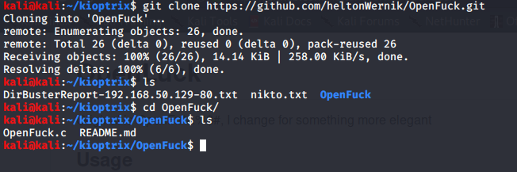

Now lets gain access with manual exploutatiaion
We discovered explot with mod ssl na OpenLuck(https://github.com/heltonWernik/OpenLuck)
Went on this site follow thre instructions



we wont need the port coz we arent doing ssl
selecet your version

apache ka version is the indicator along with redhatlinux


Thus technically metasploit is quite robusteven though even this works
THus users generally start through 500
er=arkier yaha passwords hote the not now but

went in this file cat etc/shadow

Thus hashes mile these are what 'x' were hollding for in above pic and we can combine them and crack it
THus we have rooted this machine twice one by metasploit and by openFuck
now would do brute force attacks(ssh se) and credential stuffing